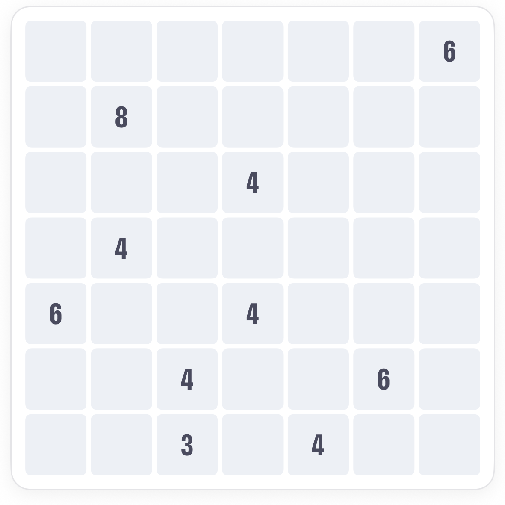
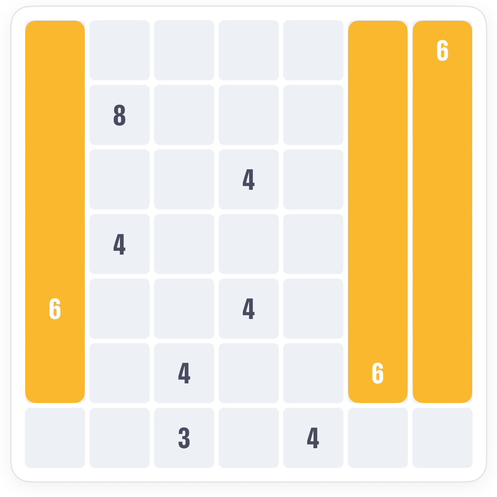
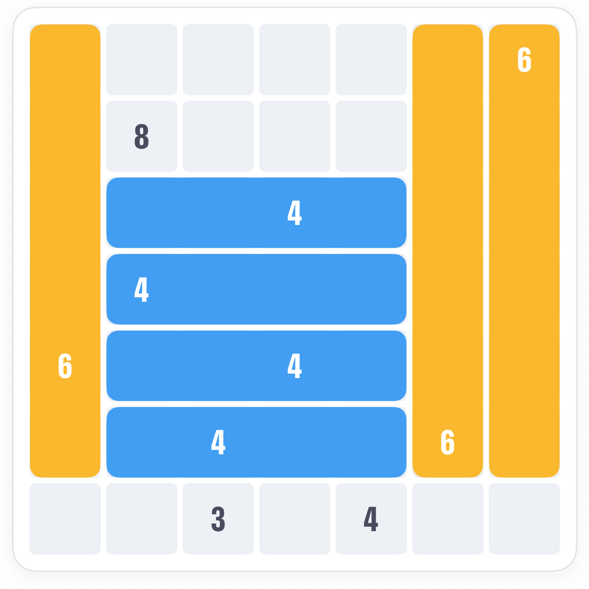
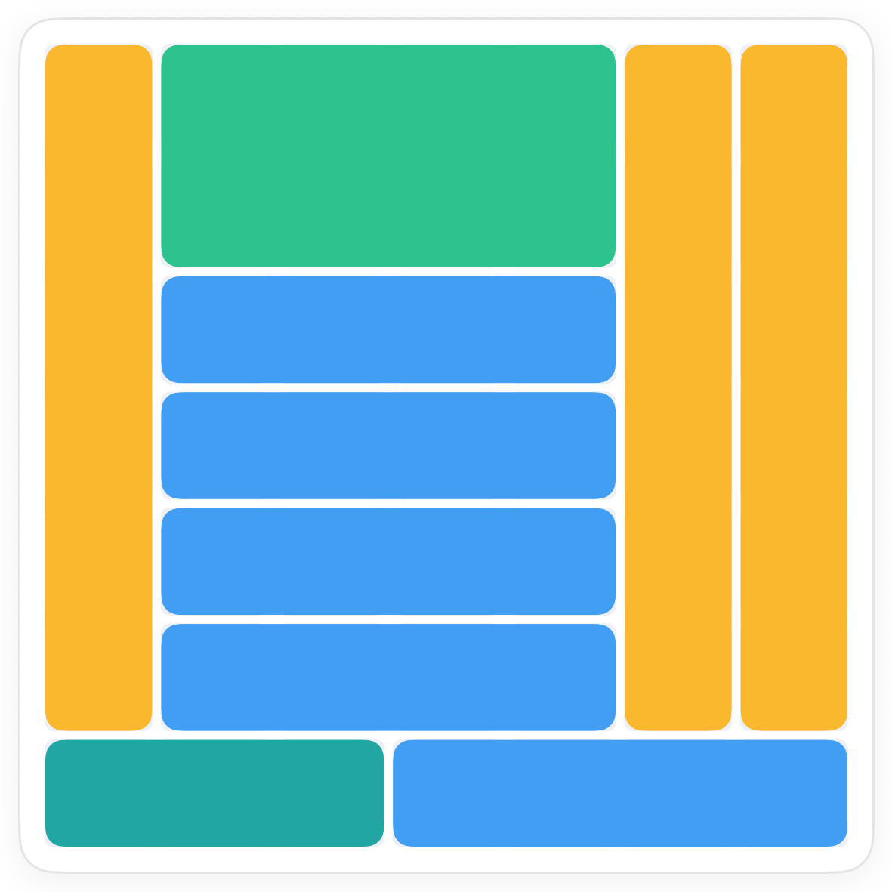

How to play Bolts Quilts.
Bolts is Quilts with one extra rule: every patch that shares a number shares a shape. Once a 6 is a strip, every 6 is a strip. Work out one and its twins fall with it.
The board.
A 7 by 7 grid with ten numbers: three 6s, five 4s, an 8 and a 3. In classic Quilts each would be cut on its own. Here the 6s must all match, and so must the 4s.

The rule.
Turned sideways still counts as the same shape. A 1 by 6 strip and a 6 by 1 strip are twins; a 2 by 3 block is not.
Place one, and its twins follow.
Find a number whose shape is forced by what is around it, then give every other patch with that number the same shape. Usually those fall straight into place.



Common questions.
Do patches with different numbers have to differ?
No. Only patches with the same number are tied to each other. A 4 and a 6 can look however they like.
What if a patch could be two shapes?
Look at its twins. One of them is usually squeezed into a single shape, and that settles all of them.